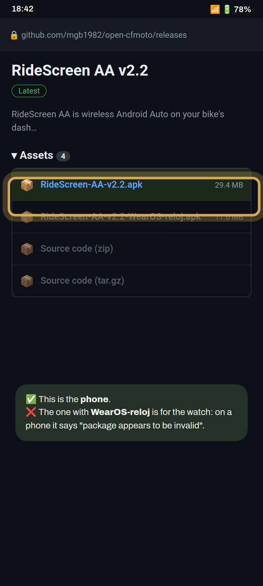
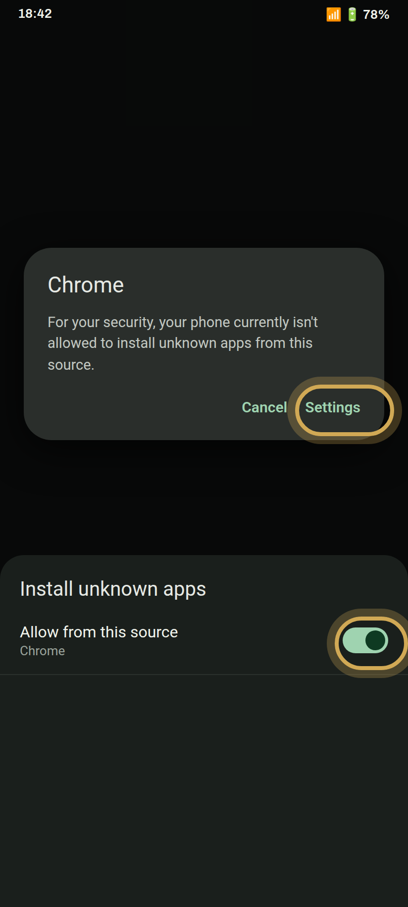
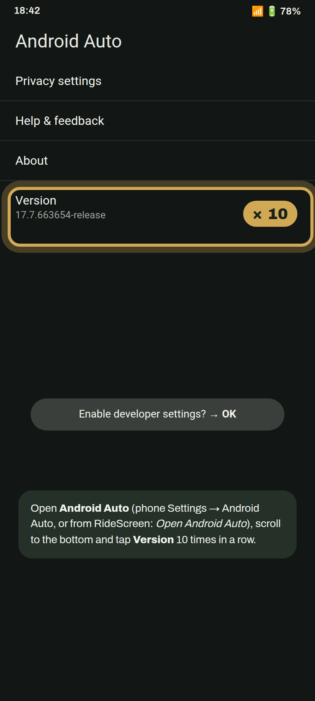
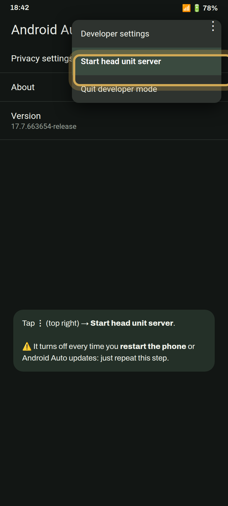
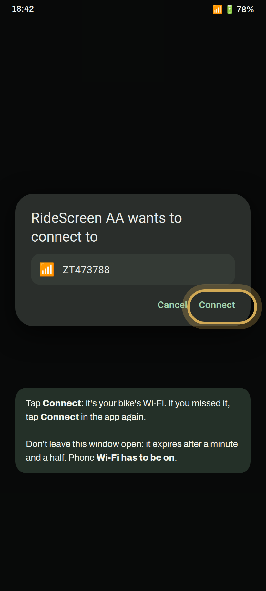
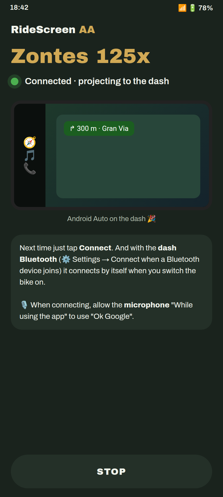

Installa e connetti in 10 minuti
Android Auto sul display della tua Zontes, passo dopo passo. La prima connessione richiede pochi minuti; in seguito basterà un tocco, oppure nessuno.
Hai uno smartwatch Wear OS? Continua con la guida per smartwatch dedicata.
- Un telefono Android 10 o successivo, a 64 bit (quasi tutti quelli degli ultimi 5 anni).
- Android Auto installato e aggiornato dal Play Store. Aprilo una volta e accetta i termini.
- Il Wi-Fi del telefono deve essere attivo. Non è necessario collegarsi a una rete.
- Se hai l’app ufficiale della moto (Zontes / EasyConnection / Carbit), chiudila: Impostazioni → App → l’app interessata → Arresto forzato.
- Per il primo abbinamento, la moto deve essere accesa e parcheggiata.
Installa l’app
-
Scarica l’APK per il telefono
Tocca il pulsante: viene scaricata direttamente l’ultima versione (RideScreen-AA-v2.3.apk o quella corrente al momento).
Scarica l’APKPreferisci GitHub? Nella pagina dell’ultima release, nella sezione Assetstocca l’APK il cui nome inizia con RideScreen-AA-v.
Non scaricare quello indicato come WearOS-reloj: è per lo smartwatch e sul telefono mostra l’errore «pacchetto non valido».
-
Consenti installazioni dal browser
Apri il file scaricato. Se Android dice che non può installare app da questa origine, tocca Impostazioni, attiva Consenti da questa origine e torna indietro.
Poi tocca Installa.

-
Se compare Play Protect, installa comunque
Compare perché l’app non è ancora sul Play Store. Tocca Altri dettagli e poi Installa comunque.
Se tocchi OK l’installazione viene annullata. Puoi riprovare aprendo di nuovo l’APK.
-
Apri RideScreen e concedi le autorizzazioni
Al primo avvio si aprono le Impostazioni. Concedi tutte le autorizzazioni richieste oppure tocca Tutte concesse per verificarle tutte insieme.
Android richiede l’accesso alla posizione per collegarsi al Wi-Fi della moto e salvare i viaggi. L’app non ti traccia.

Configura Android Auto
-
Attiva la modalità sviluppatore
Apri le impostazioni di Android Auto (Impostazioni del telefono → Android Auto, oppure da RideScreen). Scorri fino in fondo e tocca Versione 10 volte di seguito. Accetta l’avviso.
Devi farlo una sola volta.

-
Avvia il server dell’unità principale
Nella stessa schermata, tocca ⋮ (in alto a destra) → Avvia server unità principale.
È il passaggio che si dimentica più spesso. Si disattiva ogni volta che riavvii il telefono o si aggiorna Android Auto. Se un giorno non si connette, ripeti semplicemente questo passaggio.
Abbina la moto
-
Scansiona il QR del display
Sul display della moto, passa all’interfaccia di mirroring dello schermo (schermata 3 sulla 125X): quella che proietta il telefono e mostra un codice QR. In RideScreen tocca Scansiona (in basso, sotto Altro) e inquadralo con la fotocamera.
Il QR nella sezione Informazioni non è quello corretto: scansiona quello dell’interfaccia di mirroring. Lascia il display su quella schermata durante la connessione.
-
Consenti il Wi-Fi della moto
Tocca Connetti in RideScreen. Android chiederà se l’app può collegarsi al Wi-Fi della moto (il nome inizia di solito con ZT…). Tocca Connetti.
Fai in fretta: la richiesta scade dopo un minuto e mezzo. Se la perdi, tocca di nuovo Connetti nell’app.
-
Fatto: Android Auto sul display
Dopo pochi secondi Android Auto appare sul display della moto. Puoi mettere il telefono in tasca.
La prossima volta basta toccare Connetti. Per farla connettere automaticamente quando avvii la moto: ⚙️ Impostazioni → Connetti quando si collega un dispositivo Bluetooth → seleziona il Bluetooth del display (inizia con «ZT») e consenti Mostra sopra altre app.
Suggerimento: una volta connesso, puoi passare a un’altra interfaccia per vedere il quadro originale. L’app resta connessa e continua a registrare il viaggio; tornando all’interfaccia di mirroring, Android Auto sarà subito disponibile.
La prima volta che ti connetti, l’app chiede accesso al microfono: scegli Solo mentre usi l’app per usare «Ok Google» e il pulsante vocale dell’interfono.

Messaggi dell’app e soluzioni
«App non installata» / «pacchetto non valido»Durante l’installazione dell’APK
- Controlla di aver scaricato RideScreen-AA-v….apk e non quello per lo smartwatch (WearOS-reloj).
- Se il download si è interrotto, il file è danneggiato: cancellalo e scaricalo di nuovo con una buona connessione.
- Se dice «non compatibile», il telefono è a 32 bit oppure usa Android 9 o una versione precedente. Facci sapere il modello del telefono.
- Se avevi installato l’ ufficiale OpenCfMoto di Alexandru, disinstallalo prima: le due app hanno firme diverse.
«Approva la richiesta Wi-Fi del telefono / selettore dispositivo…»Durante la connessione
- La richiesta Wi-Fi della moto è apparsa ma non è stata accettata in tempo. Tocca di nuovo Connetti e conferma subito.
- Se la richiesta non appare, la moto deve essere accesa e vicina e il display deve essere sull’interfaccia di mirroring.
- Se appare ma non si connette, controlla di aver scansionato il QR dell’interfaccia di mirroring e non quello delle Informazioni. In caso di dubbio, scansionalo di nuovo.
«Concedi l’autorizzazione Dispositivi nelle vicinanze / Bluetooth, poi tocca di nuovo Connetti»Durante la connessione
- L’autorizzazione Dispositivi nelle vicinanze manca; Android la richiede per connettersi al Wi-Fi e al Bluetooth della moto.
- Impostazioni telefono → App → RideScreen AA → Autorizzazioni → Dispositivi nelle vicinanze → Consenti. Poi tocca Connetti.
«Il Wi-Fi del telefono è disattivato»Durante la connessione
Attiva il Wi-Fi del telefono. Non devi collegarti manualmente a una rete: l’app si collega da sola a quella della moto.
«Chiudi l’app ufficiale e riconnettiti»Durante la connessione
L’app ufficiale della moto (Zontes / EasyConnection / Carbit) sta occupando la connessione al display. Impostazioni → App → quell’app → Arresto forzato, poi tocca di nuovo Connetti. Se non la usi, la soluzione più semplice è disinstallarla.
«Android Auto non si è collegato» / si connette e si disconnetteWi-Fi della moto connesso, ma Android Auto non appare
- Quasi sempre è il server dell’unità principale (passaggio 6): l’app mostra un avviso con il pulsante Apri Android Auto Per farlo, in Android Auto scegli ⋮ → Arresta server unità principale e poi avvialo di nuovo (a volte si blocca anche se sembra attivo).
- Dopo aver riavviato il telefono devi sempre avviarlo di nuovo.
- Non disinstallare gli aggiornamenti di Android Auto: non serve e può peggiorare le cose.
Si connette la prima volta, ma non dopo aver riavviato la motoDopo aver spento e riacceso
- Quando riaccendi, imposta il display sull’ di mirroring dello schermo e aspetta circa 20–30 secondi: l’app troverà la moto automaticamente.
- Se non compare ancora l’immagine, tocca Interrompi e poi Connetti Connetti in RideScreen.
- Se nel frattempo hai riavviato il telefono, avvia prima il server dell’unità principale (passaggio 6).
Voglio vedere il quadro originale senza disconnettermiAltre interfacce
- Connettiti sempre dall’ di mirroring dello schermo (schermata 3 sulla 125X): è l’unica in cui il display attiva il Wi-Fi. Se provi da un’altra schermata, l’app dirà che non trova il Wi-Fi della moto.
- Quando Android Auto è visibile, puoi passare a un’altra interfaccia quando vuoi: l’app resta connessa, registra il viaggio e Android Auto continua a funzionare in background.
- Torna all’interfaccia di mirroring e Android Auto sarà subito disponibile, senza riconnettersi.
Nessuna delle precedentiCome chiedere aiuto
In RideScreen tocca ❓ Aiuto → Condividi log subito dopo l’errore e invia i log al gruppo indicando il modello della moto e del telefono. I log non includono password o numeri di serie.
RideScreen AA è un software libero e open source basato su OpenCfMoto di Alexandru (zanderp). Non è un’app ufficiale Zontes. Le schermate sono illustrative: i nomi esatti delle impostazioni possono variare in base al telefono.